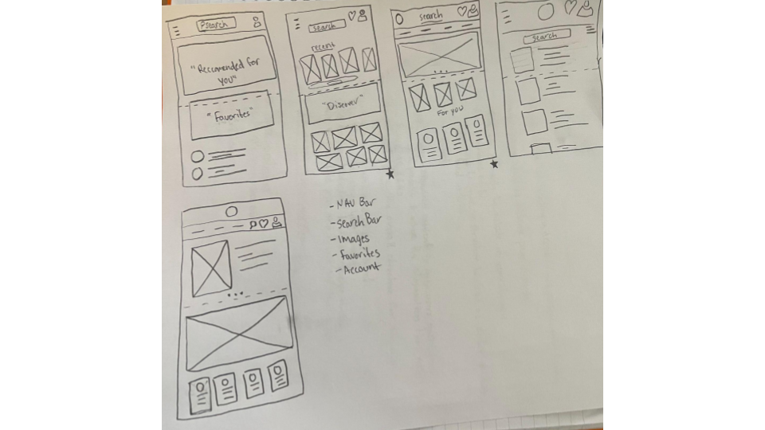
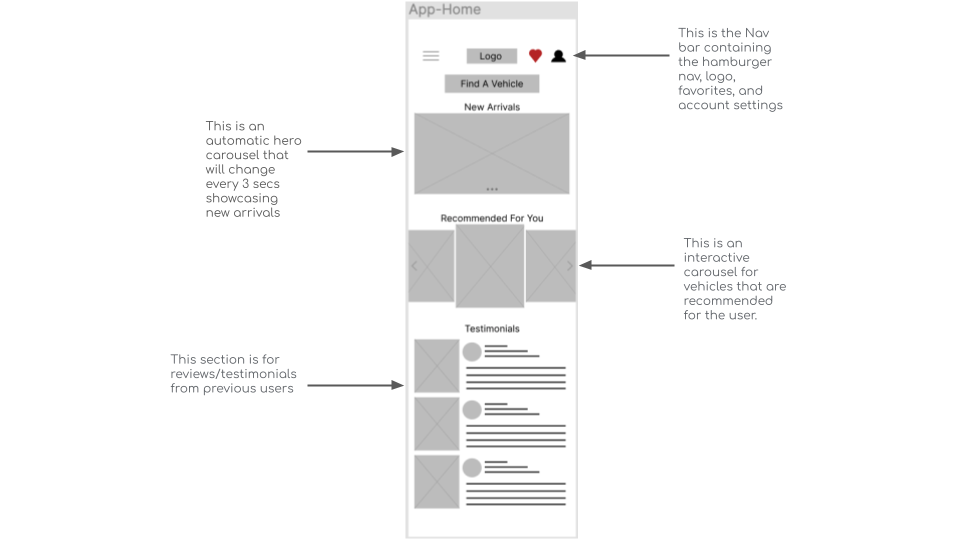
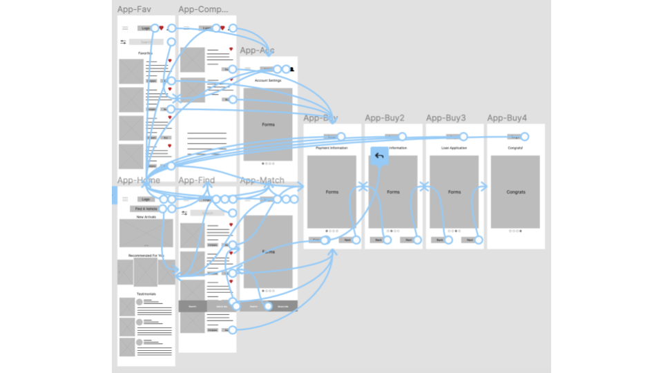
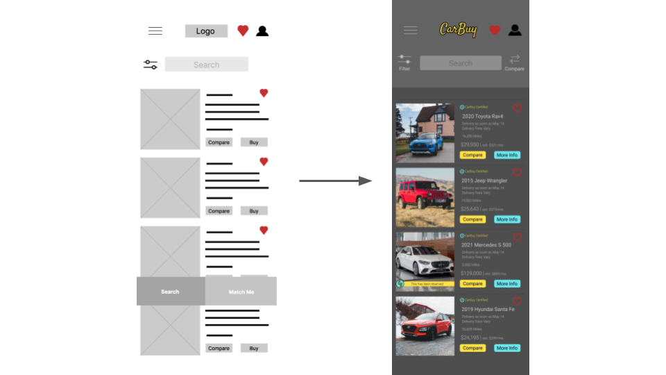
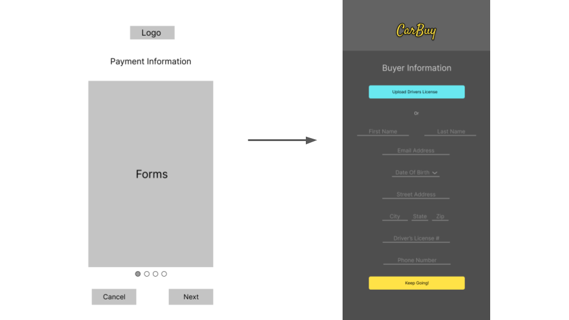
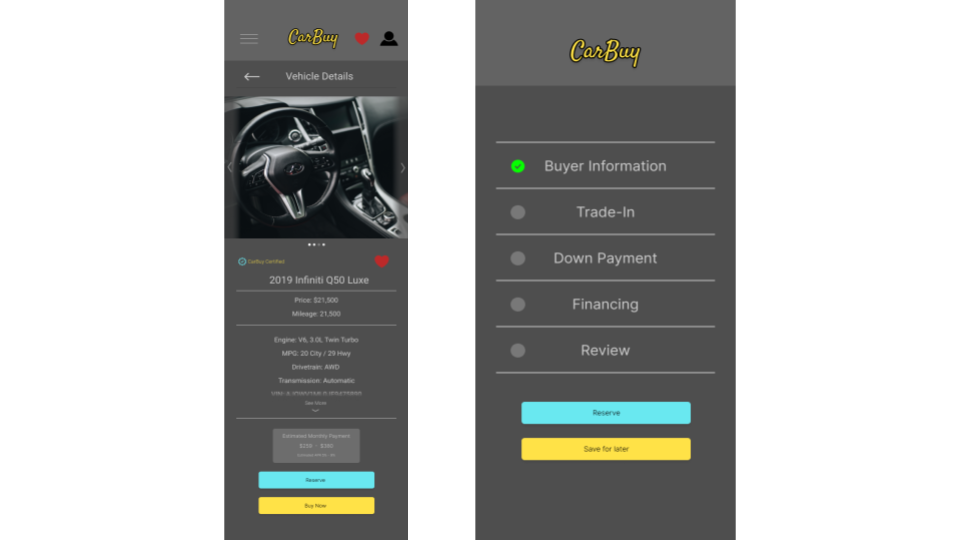
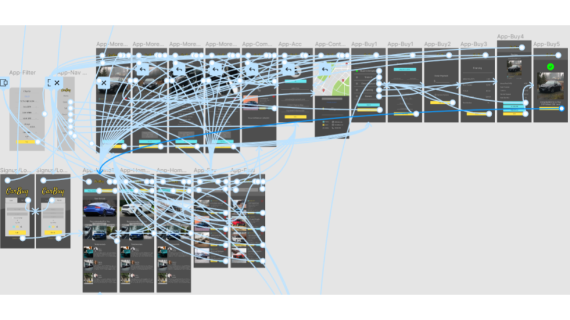

CarBuy is a mobile application made to change the way people browse and purchase vehicles. This app is meant to make looking or purchasing the right vehicle for the user quick and easy while being trustworthy. It is designed for anyone in the market for a vehicle.
My role:
After conducting 2 interviews and 2 empath maps, to better understand the needs their needs. A primary user group identified were people ages 22+, did not like enjoy the traditional process of purchasing vehicles and would prefer doing this online from the comfort of their own home. Research also revealed that the process to buying a vehicle was not the only factor to purchasing a vehicle. Participants that have used other sites/apps to browse vehicles have mentioned difficulty navigating through the site/app itself.
Users do not enjoy the lengthy process of buying a new car.
Some users are not able to commute to dealerships.
Users have also stated that buying a car in person can be intimidating.
These are a couple of CarBuy wireframes drawn out by hand. The one to the left is for web and the other for mobile.
I drew two different home pages for both web and mobile, making sure the design would be responsive for all platforms.
Below, is my low-fidelity prototype for the mobile app for Carbuy.
The user will be apart of a moderated usability study. They will be prompted to complete 3 tasks that can be done through the app, share any ideas, and provide any feedback.
The process to buy and sell is too long. Users want a feature that will easily populate information.
Participants found that the “Match Me” feature is not necessary and acts as a filter feature.
Users wanted an indication and tracking of the buying process.
Users wanted to be able to save their progress in the car buying process for later.
Users wanted a way to reserve a specific vehicle.
I wanted to include a unique feature that helped users find vehicles that matched the user with their dream car. After usability studies, I found that this feature would not be necessary and that it took up too much space. I removed this feature and made the filter feature functional.
The second usability study revealed frustration when going through the car buying process. Users wanted a way to be able to upload information to avoid filling out forms manually. I added an option to upload a driver’s license that would help auto populate information.
A couple more mockups that address findings from usability studies.
The final high-fidelity prototype presented a cleaner user flow for the car buying process. It also includes features that meet the users wants.
Used detailed imaages to represent the meal. To help users better understand what they are clicking on.
Tested color contrast on WebAIM and compared WCAG, making sure my color pallette is user friendly.
Used icons to help make navigation easier.